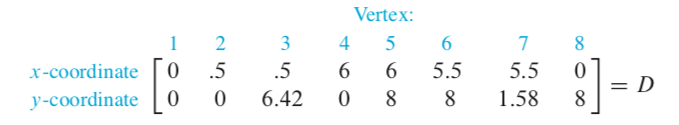
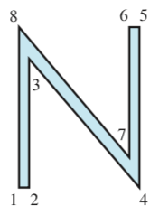
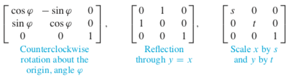
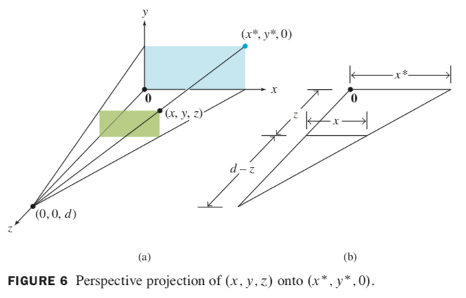

graphics are stored in a matrix, such as this:
 
each point (x, y) in 2D can be identified with point (x, y, 1) in 3D. so we say that (x, y) has homogeneous coordinates (x, y, 1).
e.g. translation is not a linear transformation. but \((x, y) \mapsto (x+h, y+k)\) can be written in homogeneous coordinates as \((x, y, 1) \mapsto (x+h, y+k, 1)\), and can be computed using matrix multiplication:
\(\begin{bmatrix} 1 & 0 & h\\ 0 & 1 & k\\ 0 & 0 & 1\end{bmatrix} \begin{bmatrix} x \\ y \\ 1 \end{bmatrix} = \begin{bmatrix} x+h \\ y+k \\ 1 \end{bmatrix}\)
(X, Y, Z, H) are homogeneous coordinates for (x, y, z) if H ≠ 0 and
\(x = \frac{X}{H}, \quad y = \frac{Y}{H}, \quad \text{and} \; z = \frac{Z}{H}\)

when you need two or more basic transformations, such a composite transformation is a matrix multiplication.
matrices for new transformations are "prepended" in multiplication. so if you're rotating, then translating, the calculation is [matrix for translation][matrix for rotation].
maps each point (x, y, z) onto an image point (x*, y*, 0) so that two points and eye position (center of projection) are on a line.
